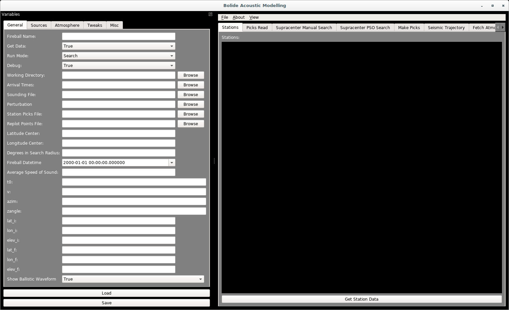

Getting Started¶
Setting Up an Event¶
An individual event is defined by its .pkl file. It is recommended that every simulation that you run should be on a separate .pkl file. The parameters of the event should be entered in the “variables” toolbar on the left side. This toolbar is dragable, dockable, and can be shown/hidden by pressing “v” (thanks to the wonderful PYQT GUI Library). It is not necessary to completely fill in every entry, the program actually has enough defaults in place to run without needing much filled in.
If you are just starting with an event, the key is to fill in as much of the “General” section as known. The program will fill in the rest of the defaults in this section, and calculate the other parameters of the trajectory if not filled in. If either of the fragmentation or ballistic searches are being done, then it is important to fill in the “Sources” tab with your search area, specifically the bottom half. The “Atmosphere” tab should set to “False” or “None”, and the two editable boxes should be set to “1” (Hopefully these will be more user-friendly in the future), if weather is not being used. The “Tweaks” tab is already defaulted to about what they should be, and should only really be edited for speed or graphing purposes. The “Misc” tab should not be touched unless you know exactly what you are doing, (hopefully this will also be more user-friendly in the future).